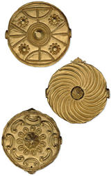

| |
The following books may serve as useful introductory references to some of the topics or areas covered by the Department of Africa, Oceania and the Americas. This is a tiny sample but more extensive book lists are available from the department's Study Room or Library.
Africa
Asia
North America
South America
Central America
Oceania
Africa
F. Willett, African Art (London, Thames and Hudson, 1971)
J. Picton and J. Mack, African Textiles (London, The British Museum Press, 1999)
J. Mack (ed), African Arts and Cultures (London, The British Museum Press, 2000)
P. Girshick Ben-Amos, The Art of Benin (London, The British Museum Press, 1995)
M.D. McLeod, The Asante (London, British Museum Publications Ltd., 1981)

Asia
A. Sibeth, The Batak: Peoples of the Island of Sumatra (London, Thames and Hudson, 1991)
R.F. Bussabarger and B. D. Robins, The Everyday Art of India (New York, Dover Publications, 1968)
P. and E. Lewis, Peoples of the Golden Triangle: Six tribes in Thailand (London, Thames and Hudson, 1984)
M. Hitchcock, Indonesian Textiles (London, British Museum Press, 1991)

North America
J.C.H. King, First Peoples First Contacts (London, The British Museum Press, 1999)
R. Green, The British Museum Encyclopaedia of Native North America (London, The British Museum Press, 1999)
C.F. Feest, Native Arts of North America (London, Thames and Hudson, 1980)
South America
C. B. Donnan, Ceramics of Ancient Peru (Los Angeles, Fowler Museum of Cultural History, 1992)
G. Urton, Inca Myths (London, The British Museum Press, 1999)
C. McEwan, C. Barretto and E. Neves, Unknown Amazon (London, The British Museum Press, 2001)
C. McEwan (ed.), Precolumbian Gold: Technology, Style and Iconography (London, The British Museum Press, 2000)
Central America
M.E. Miller, The Arts of Mesoamerica from Olmec to Aztec (London, Thames and Hudson, 1980)
C. McEwan, Ancient Mexico in the British Museum (London, British Museum Press, 1994)
S.T. Evans and D.L. Webster (eds), Archaeology of Ancient Mexico and Central America, An Encyclopaedia (London, Garland Publishing Inc., 2001)
E. Carmichael and C. Sayers, The Skeleton at the Feast, The Day of the Dead in Mexico (London, The British Museum Press, 1991)
Oceania
P. Bellwood, Man's Conquest of the Pacific (New York: Oxford University Press, 1979)
A. D'Alleva, Art of the Pacific (London, Everyman Art Library, 1998)
A. Kaeppler, C. Kaufmann and D. Newton, Oceanic Art (New York, Abrams, 1997)
K.R. Howe, Where the Waves Fall: A new South Seas Islands History from First Settlement to Colonial Rule (Sydney & London, George Allen & Unwin, 1984)
D. Oliver, Oceania: the Native Cultures of Australia and the Pacific Islands (Honolulu, University of Hawaii Press, 1989)
N. Thomas, Oceanic Art (London, Thames and Hudson, 1995) |
|

Gold
pectoral discs Asante, 19th century AD, from Ghana
|
|
|
|